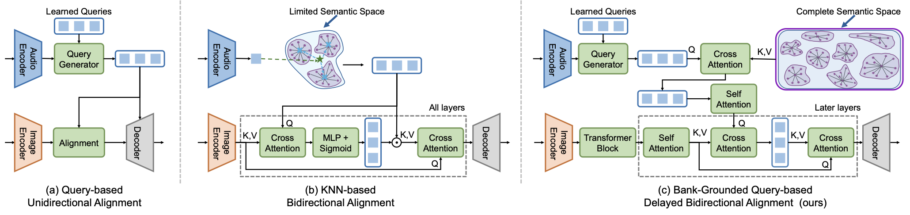
We propose DDAVS, an audio-visual segmentation framework that disentangles audio semantics and performs delayed bidirectional modality alignment to robustly localize sounding objects at the pixel level. DDAVS introduces an Audio Query Module with a prototype memory bank, a contrastive optimization module, and a multi-stage Audio-Visual Alignment Module, achieving state-of-the-art performance on AVS-Objects and VPO benchmarks, especially in challenging multi-source, subtle, distant, and off-screen scenarios.
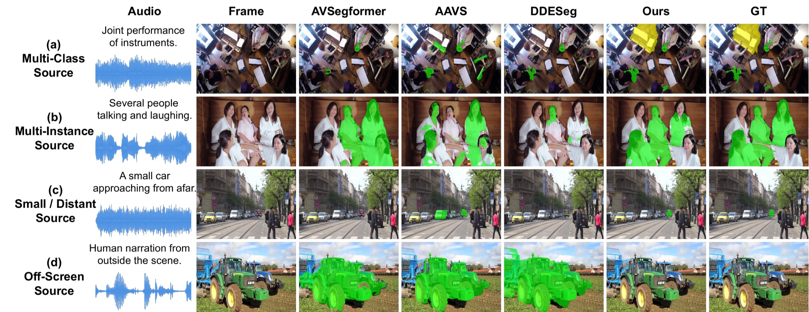
Audio–Visual Segmentation (AVS) aims to localize sound-producing objects at the pixel level by integrating auditory and visual cues. However, existing methods often struggle with multi-source entanglement and audio–visual misalignment, leading to a dominance bias toward acoustically or visually salient objects (i.e., louder or larger ones) at the expense of subtler or co-occurring sources. To address these challenges, we propose DDAVS: Delayed Bidirectional Alignment via Disentangled Audio Semantics for Audio-Visual Segmentation. To mitigate multi-source entanglement, DDAVS employs learnable queries to extract audio semantics and anchor them within a structured semantic space derived from an audio prototype memory bank. This process is further optimized through contrastive learning to enhance discriminability and robustness. To alleviate audio–visual misalignment, DDAVS introduces dual cross-attention with delayed modality interaction, improving the robustness of multimodal alignment. Extensive experiments on the AVS-Objects and VPO benchmarks demonstrate that DDAVS achieves state-of-the-art performance across single-source, multi-source, and multi-class multi-instance scenarios. These results validate the effectiveness and generalization ability of our framework under challenging real-world audio–visual segmentation conditions.
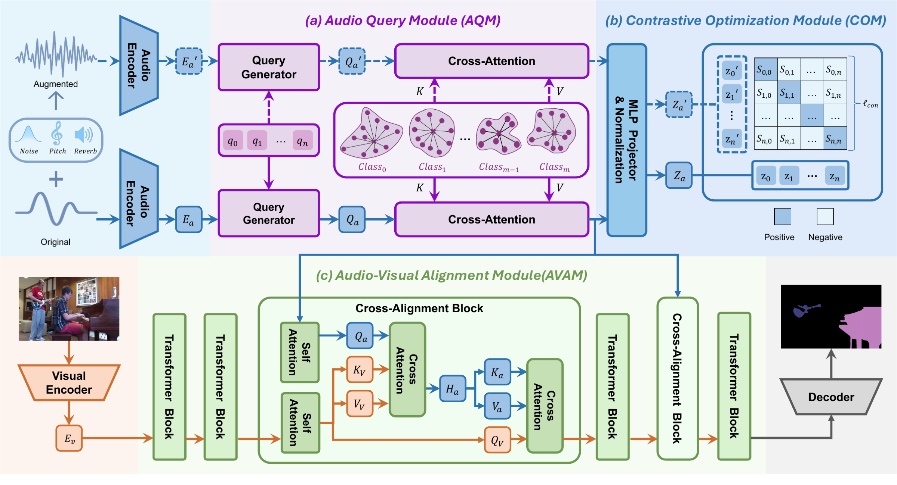
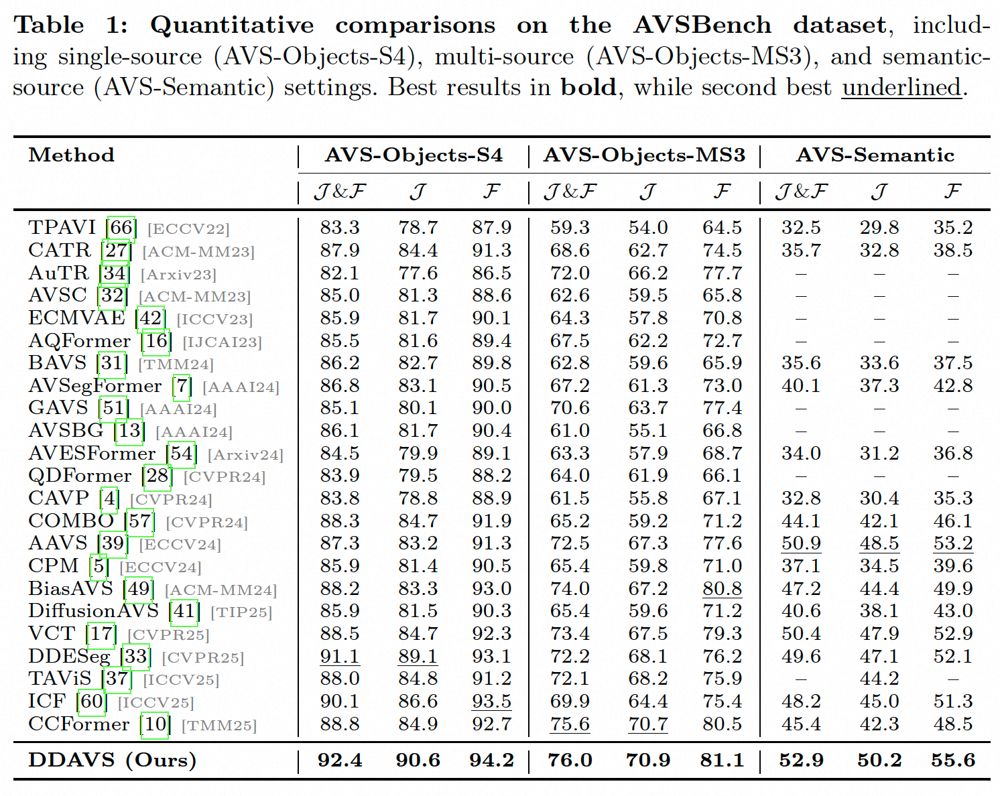
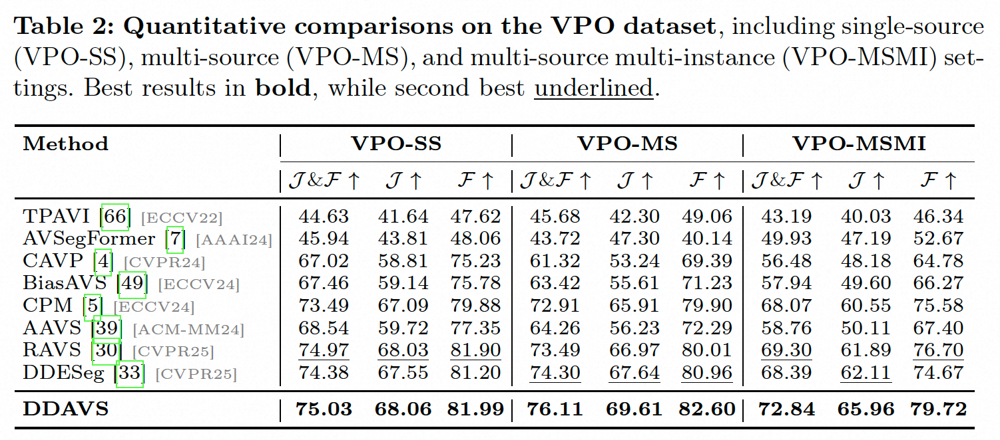
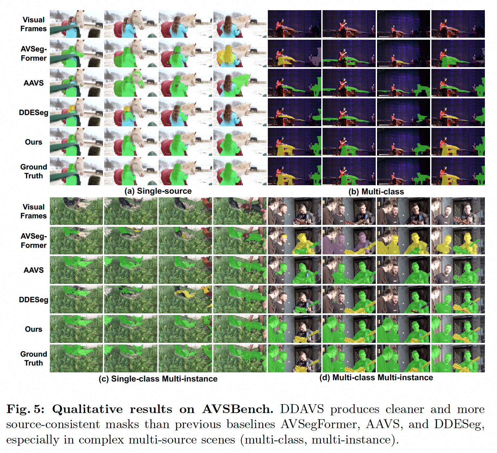
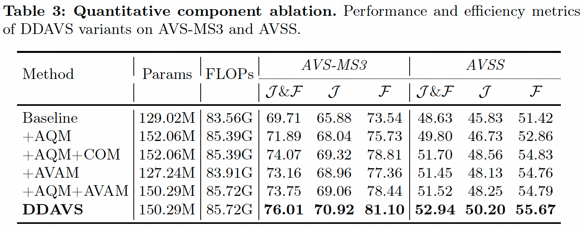
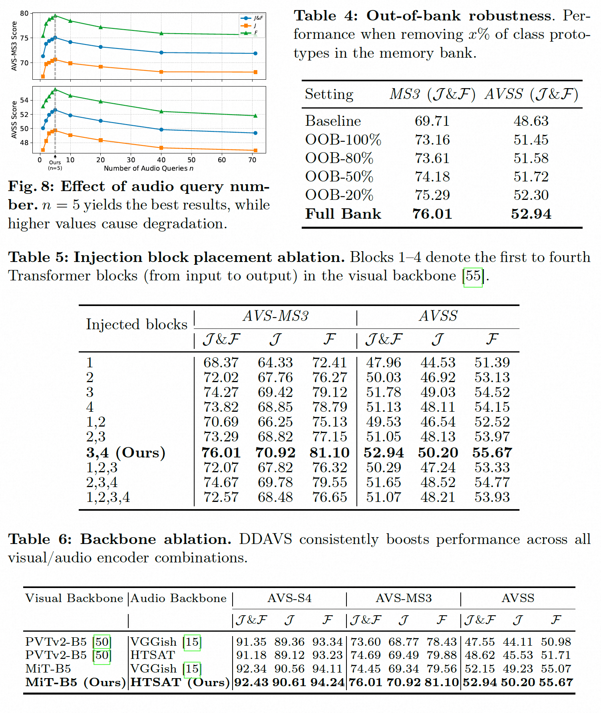
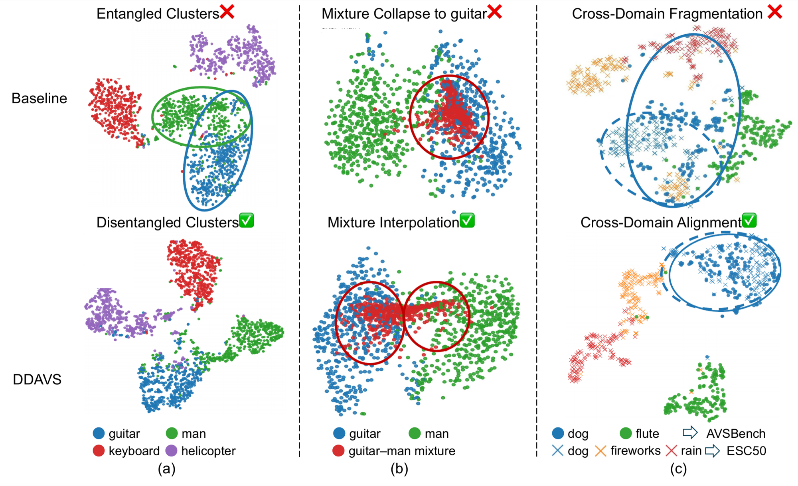
Qualitative results of DDAVS across the four challenging AVS scenarios.
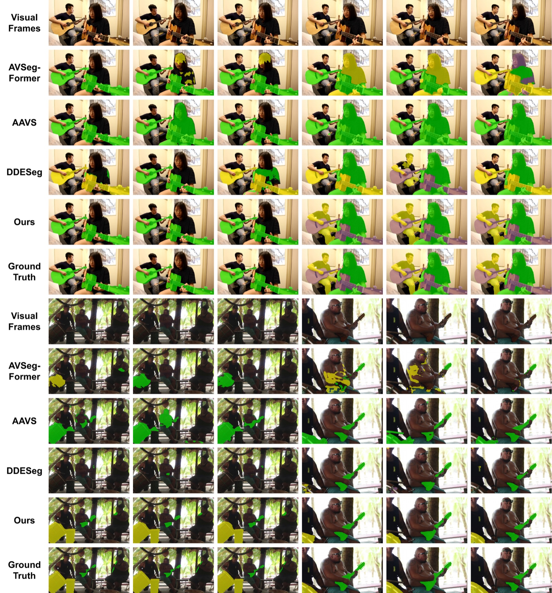
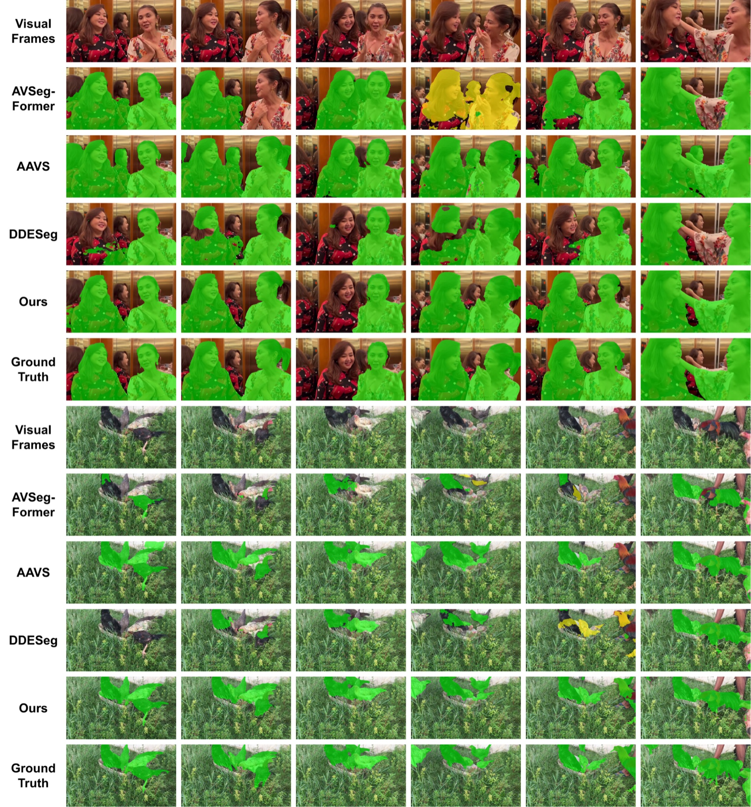
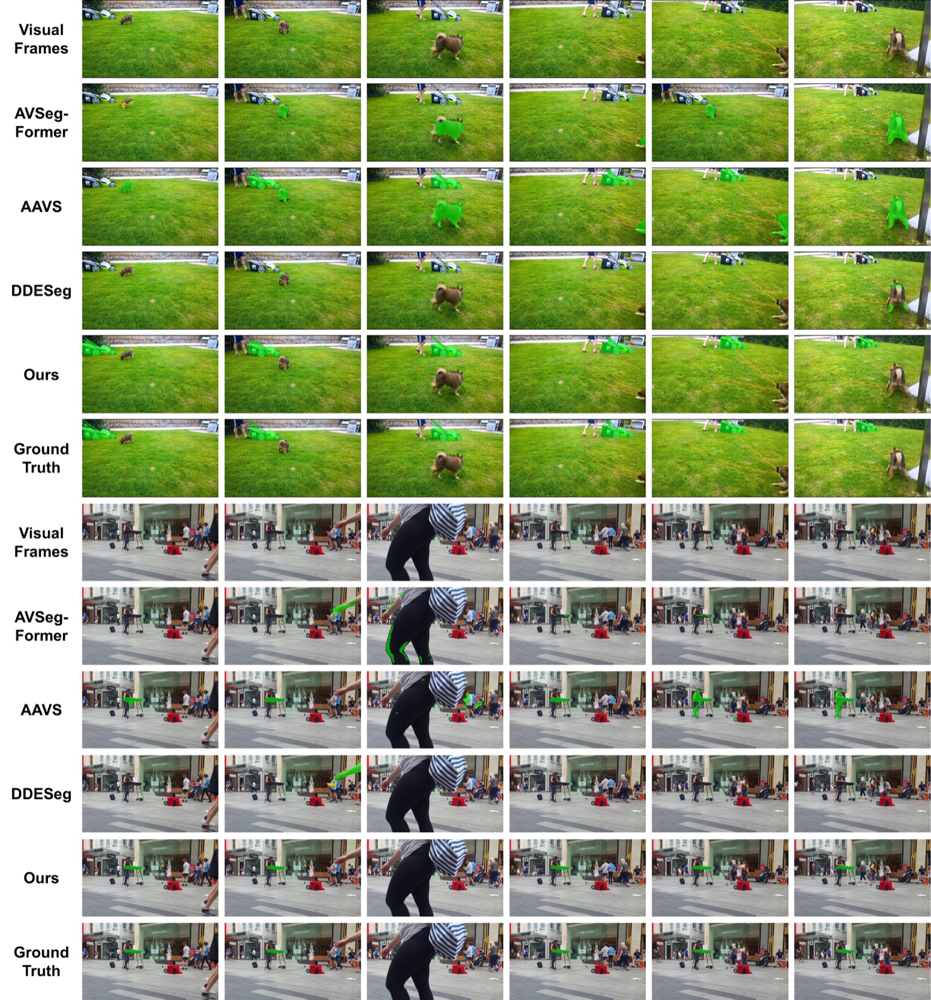
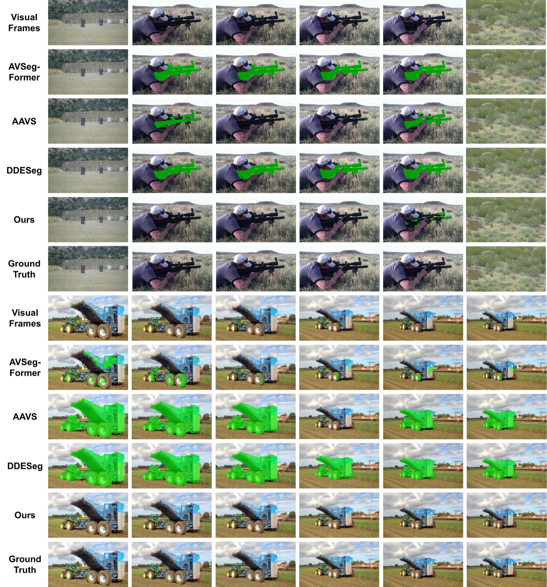
@article{tian2025ddavs,
title={DDAVS: Disentangled Audio Semantics and Delayed Bidirectional Alignment for Audio-Visual Segmentation},
author={Tian, Jingqi and Du, Yiheng and Zhang, Haoji and Wang, Yuji and Lee, Isaac Ning and Bai, Xulong and Zhu, Tianrui and Niu, Jingxuan and Tang, Yansong},
journal={arXiv preprint arXiv:2512.20117},
year={2025}
}